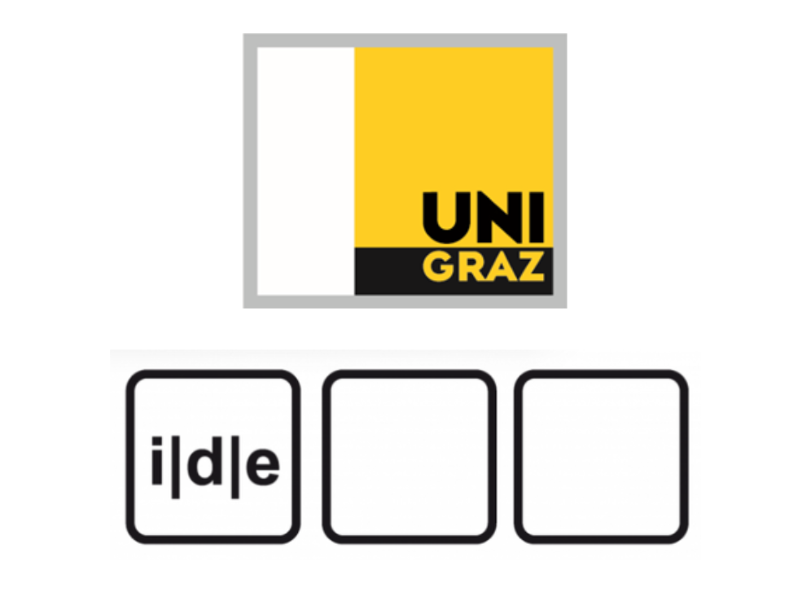
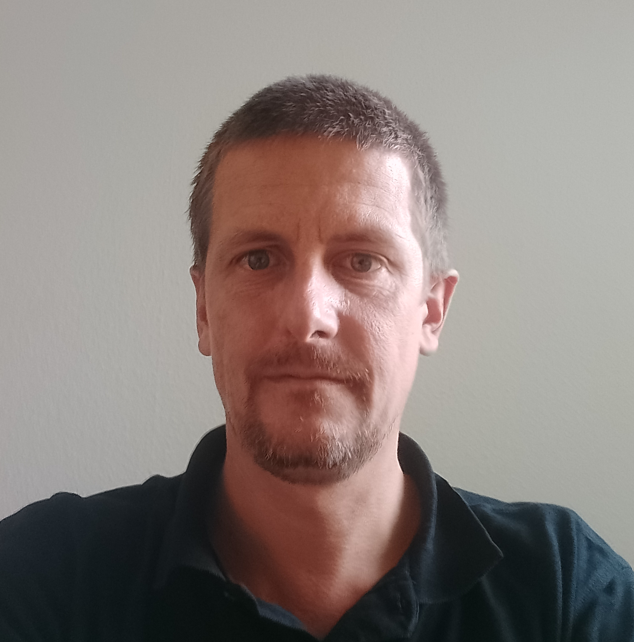
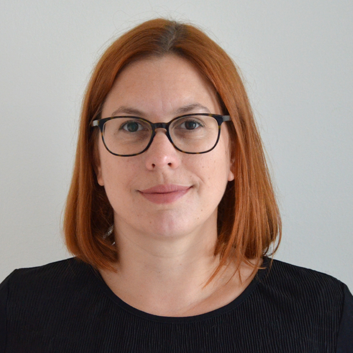

Machine Learning for Digital Scholarly Editions
Let's begin21 - 25th, September 2026
Elisabethstraße 59/III, 8010 Graz, Austria
Department of Digital Humanities
About the Summer School
Machine learning is increasingly shaping research in the Digital Humanities, offering powerful tools for analyzing and enriching textual data. Using the Python library BERTopic, participants will explore various steps of topic modeling. Building upon BERTopic’s modular architecture, students will be introduced to several essential machine learning methods, such as embedding, dimensionality reduction, and clustering. Through practical sessions, students will learn to apply these techniques to historical texts. The aim is to give non-experts a high-level practical overview of how to use the BERTopic library and the essential theory behind its modules.
The school is intended for both students and researchers with an interest in the intersection between digital scholarly editing and Machine Learning. After attending the school, participants will have a basic understanding of machine learning algorithms and be able to assess their possible applications as well as strengths and limitations. Participants will be able to practically use BERTopic on their own data.

Meet the Speakers

Roman Bleier
Roman Bleier is a postdoctoral researcher at the Department of Digital Humanities at the University of Graz. His research focuses on digital scholarly editing, text encoding, and digital history. He was part of the editorial team for The Imperial Diets of 1576 and is currently co-PI of the FWF-DFG project History as a Visual Concept: Peter of Poitiers' "Compendium historiae". Roman is also a member of the Institute for Documentology and Scholarly Editing.

Martina Scholger
Martina Scholger is a senior scientist at the Department of Digital Humanities, University of Graz, where her research focuses on digital scholarly editing, text encoding, text mining, and LLM applications. She is co-PI of the FWF-DFG Early Manila Hokkien project and contributes to the digital edition of Joseph von Hammer-Purgstall’s correspondence, the Visual Archive Southeastern Europe, and Picturing Migrants' Lives. She has been an elected member of the TEI Technical Council since 2016, a member of the Institute for Documentology and Scholarly Editing since 2012, and is managing editor of RIDE (Review Journal for Scholarly Digital Editions and Resources).